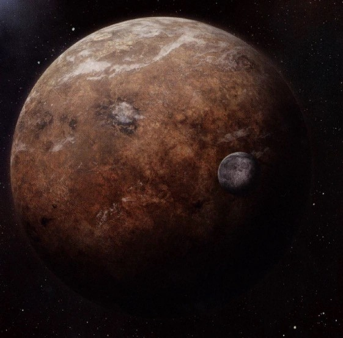

Colchis
| Colchis | |
|---|---|
| Homeworld of Lorgar and the Word Bearers (destroyed) | |
 Colchis in a survey of the Mechanicum made during the Great Crusade | |
| Segmentum | Segmentum Pacificus, near the border of the Segmentum Obscurus |
| Classification | Feudal world (Great Crusade); Legion recruiting world; now destroyed |
| Size | About three times the diameter of Terra |
| Day and year | Day of c. 170 standard hours; year of 4.8 standard years |
| Capital | Vharadesh, the City of Grey Flowers |
| Government | Theocracy of the Covenant; under Lorgar from before 857.M30 |
| Compliance | 857.M30, with the discovery of Lorgar |
| Fate | Exterminatus by the Ultramarines, c. 032.M31, on the order of the Inquisition |
| Status | Destroyed; location sealed by Inquisitorial edict |
Colchis was a vast desert world of the Segmentum Pacificus and the homeworld of the primarch Lorgar and of the XVII Legion, the Word Bearers. Before the Great Crusade it was ruled by a priestly caste called the Covenant, whose religion, the Old Faith, Imperial scholars now identify as a worship of the Ruinous Powers. Lorgar, raised within the Covenant, preached against it, won a planetary holy war, and turned the faith of Colchis to the worship of the Emperor as a god, before the Emperor found him there in 857.M30.[1][2]
After the Horus Heresy, Colchis was named among the homeworlds of the Traitor Legions to be purged. In about 032.M31 the Ultramarines, in reprisal for the Battle of Calth, attacked the world, and on the order of the Inquisition it was destroyed with cyclonic torpedoes. Its unstable crust broke apart, and its location is today held secret.[3]
Geography
[edit]Colchis was a giant among inhabited worlds, about three times the size of Terra with a fraction of its population. It turned slowly: a local day lasted about 170 standard hours, and its year nearly five standard years. To live with the long day, the Colchisians divided it into seven sub-days, from "Dawnaway" to "High Night", each split into three watches. The hottest hours were those of Long Noon; the coldest, the last watch of High Night.[4]
Mountain ranges and red-brown desert plains covered most of the surface, crossed by rivers that flooded each season. The population lived in coastal city-states linked by sea and air, since roads across the deserts were impractical. Its capital, Vharadesh, the "City of Grey Flowers", stood among irrigated farmland and was the seat of the Covenant's great Spire Temple. Ruins of an older, machine-built civilisation of the Dark Age of Technology lay across the continents, and the hulks of dead shipyards still circled the planet in the Great Crusade.[4][1]
History
[edit]Settlement and the Covenant
[edit]Mechanicum explorators of the Great Crusade dated the first human settlement of Colchis to about the 16th millennium (M16), although they admitted the estimate was uncertain. The world was technologically advanced in the Dark Age of Technology and fell into anarchy in the Age of Strife (c. M25–M30), and its people regressed to a pre-industrial society.[4][a]
The Covenant rebuilt the world's society on a promise that a great leader would one day deliver it. Its creed governed all of life. The desert nomads outside the cities were called "the Declined" and held to be damned by the Great Powers, and slavery was common. Imperial scholars have since concluded that the Great Powers of the Old Faith were the four Chaos Gods under other names.[2]
The coming of Lorgar
[edit]
Lorgar's capsule reached Colchis, by the reckoning used in the Liber Primarchus, in about 792.M30. Accounts of his arrival differ: the historian Carpinus recorded a comet that struck the Covenant's greatest temple, while other traditions tell of a golden-skinned child who came to the temple doors and asked to be taught. He was taken in by the priest Kor Phaeron, who became his foster father, and he grew up in the temple, mastering its scriptures and soon surpassing his teachers.[1][4]
Lorgar had visions of a golden figure and preached that the true god was coming. Some of the Covenant listened; most were threatened. The Covenant split into the followers of the Old Faith and the Godsworn, the brotherhood of Lorgar, and the Schism Wars followed: a holy war of six standard years, fought across the planet with great cruelty on both sides. The Godsworn won, Lorgar took Vharadesh and the world was united under his rule.[1][b]
The Great Crusade
[edit]Less than a year after the last battle of the Schism Wars, in 857.M30, the Emperor landed at the main temple of Vharadesh, accompanied, according to the Apocrypha of Skaros, by Magnus the Red and two squads of the Thousand Sons. Lorgar knelt to him as to the god of his visions. He took command of the XVII Legion, the Imperial Heralds, which he renamed the Word Bearers, and Colchis became its recruiting world.[1]
Lorgar left the world to the Covenant's officials, who let it decline. Colchis refused to build orbital stations or supply the expeditionary fleets, and few Imperial ships called there; the disappearance of the 2188th Expeditionary Fleet in the region added to rumours about its space lanes. At home, the Legion's conquests were proclaimed from speaker towers, and the Covenant declared festivals for every new compliance. After the Emperor's rebuke of Lorgar at Khur in c. 960.M30, the Legion's faith turned in secret back towards the powers the Old Faith had worshipped.[2][c]
The Heresy and destruction
[edit]Colchis played little part in the fighting of the Horus Heresy (005–014.M31), but it remained a symbol for the Word Bearers, whose betrayal at Calth in 007.M31 began the Shadow Crusade against Ultramar. In the Great Scouring that followed the Siege of Terra, the Ultramarines came to Colchis in about 032.M31. They found its industry in ruins and its people barely holding to civilisation. The newly formed Inquisition, fearing that the whole population shared the Legion's corruption, ordered Exterminatus. After a planetary assault, the Ultramarines battle-barge Octavius fired cyclonic torpedoes into the planet, and its unstable crust split it apart.[3][5]
Nothing is known to remain of Colchis, and the Inquisition keeps its coordinates secret. The Word Bearers have kept its memory, its language and its liturgy alive in the Eye of Terror for ten thousand years, and their Dark Apostles still preach in the manner of the Covenant. In the Era Indomitus (since 999.M41) the Legion has again been reported in the field with Lorgar at its head.[6]
Society and religion
[edit]Colchis was a world of law, ritual and hierarchy. The Covenant's dogma reached into every act of daily life, and the people of Vharadesh honoured their priests above all other authority. Under Lorgar the worship of the Emperor as god was taught across the planet, and his Lectitio Divinitatus, the text from which the Imperial Cult would later grow, was written in this period. The Legion took its recruits from the Colchisian population and from the worlds it conquered, and Colchisian remained the sacred tongue of the Word Bearers.[7][1]
Timeline
[edit]| Date | Event |
|---|---|
| c. M16 (estimated) | First human settlement, by the Mechanicum's reckoning |
| c. M25–M30 | Age of Strife; Colchis regresses; rise of the Covenant |
| c. 792.M30 | Lorgar arrives and is taken in by Kor Phaeron |
| c. 850–856.M30 (estimated) | The Schism Wars between the Old Faith and the Godsworn |
| 857.M30 | The Emperor reaches Colchis; Lorgar takes command of the XVII Legion |
| c. 960.M30 (estimated) | Rebuke at Khur; the Word Bearers turn in secret to Chaos |
| 005–014.M31 | Horus Heresy |
| c. 032.M31 | Ultramarines assault Colchis; Exterminatus ordered by the Inquisition |
| M32–M42 | Location kept sealed; the Word Bearers preserve Colchisian rites in the Eye of Terror |
See also
[edit]Notes
[edit]- ^ The settlement date is the Mechanicum's own estimate; no Colchisian record survives to confirm it.
- ^ The Schism Wars are dated only as ending shortly before 857.M30; c. 850–856.M30 is an estimate from the six-year length recorded for them.
- ^ The rebuke at Khur is not dated in the surviving records consulted for this article; c. 960.M30 is the estimate used in Imperial chronologies of the Word Bearers.
References
[edit]- ^ a b c d e f Liber Primarchus (M32, revised M41). Administratum Archive, Terra.
- ^ a b c Chronicles of the Heresy (sealed). Logos Historica Verita, Terra.
- ^ a b Annals of the Scouring (c. 040.M31). Office of the Lord Commander, Macragge.
- ^ a b c d Carpinus (c. 000.M31). Speculum Historiale. Remembrancer Order (fragments).
- ^ Register of Exterminatus Actions (sealed). Inquisition, Terra.
- ^ Records of the Indomitus Crusade (ongoing). Office of the Lord Commander.
- ^ Liber Ecclesiasticus (M37). Adeptus Ministorum.